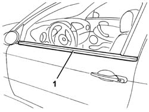

7005D26 front side descending window glass scraper (outer) r r
- Path
- Procedures > 70 FITTINGS > 7005 PASSENGER COMPARTMENT FRONT SIDE DOORS > 7005D front side door window glasses > 7005D26 front side descending window glass scraper (outer) r r
- Kind
- repair procedure (removal / refitting; the operation number is the code)
- Applies to
- all engines; all production periods
- Interactive page
- https://sloeber94.github.io/elrnDB-a147/en/#/3025667
Applies to: all engines; all production periods
 Removing
Removing
 Refitting
RefittingLower the window completely.
1. Remove the glass scraper.

Applies to: all engines; all production periods
Refitting
RemovingCheck that the glass scraper is undamaged.
Fit the glass scraper.
Check the operation of the glass scraper.